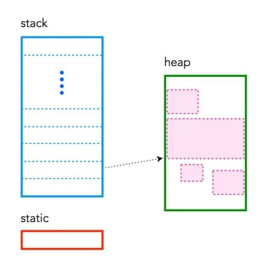
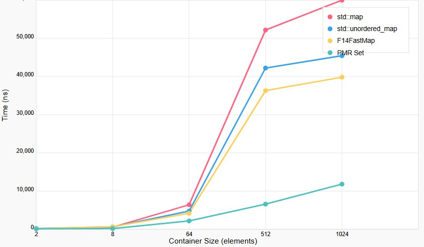
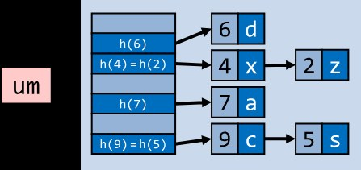
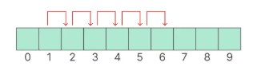
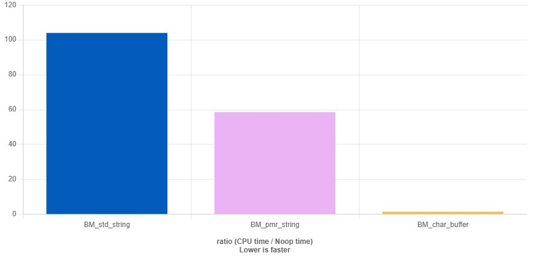
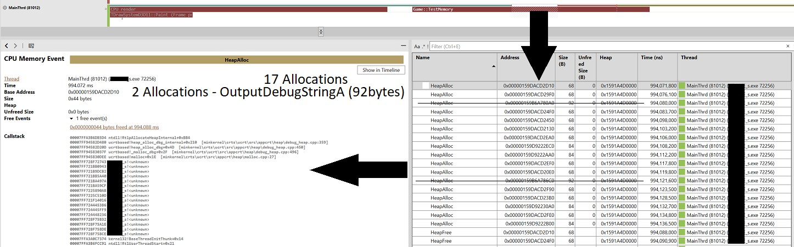
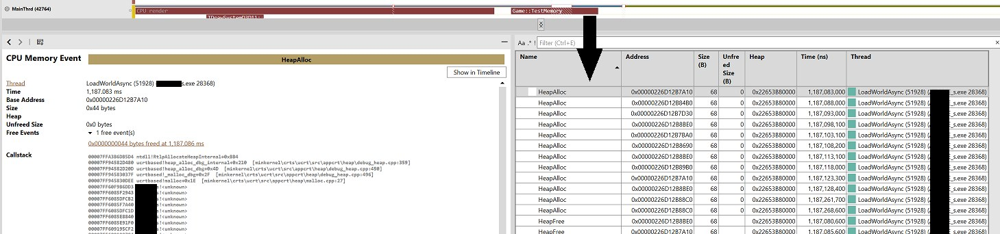

One of the frequent questions I get from students or at our internal studio lectures is: which memory allocation strategy is best to use during development? The answer: ideally none — that is, don't use runtime allocations — but life makes its own adjustments.
We all know you can't just allocate memory whenever you feel like it, but we put off solving this problem until the end of the project. By that time the deadlines start to press, milestones and certain body parts start to burn, and it's usually already too late to make serious changes. Well, at least there are a couple of weeks before release to fix the main problems.
Dynamic memory allocation is exactly the kind of thing that, for most programmers, falls into that category everyone knows about but ignores until OOM arrives. Although a little thoughtfulness and advance planning can help avoid most of these problems and give a little hope that the game won't run out of memory at the most inopportune moment.
I'll try to convince you not to use std::string/vector inside functions. When you write code for the PC — whether it's a game or something else — the program is usually divided into roughly five memory regions.
This is part of the "Game++" series:
Game++. Heap? Less <=== You are here
Text region (.text): machine code, conditionally immutable during execution.
Data region (.rodata): global and static variables that were initialized at compile time.
BSS region (.bss / block started by symbol): global and static variables that were not initialized and are set to zero by default.
Stack: a dynamic memory region used to store local variables, manage function calls and pass parameters between them, and save the program's execution state. It conditionally sits at the right edge of our address space and grows to the left, of course, and has an explicitly set size, albeit a fairly large one — up to several megabytes.
Heap: a dynamic memory region that lets you allocate and free memory during program execution via malloc(), free(), new, delete calls. It gives us more flexible memory management compared to the stack, but can lead to fragmentation and requires explicit freeing of memory to prevent leaks. It conditionally sits at the left edge of our address space and grows to the right, theoretically infinitely.

Since the text and data (.rodata) sections behave the same way, the linker may well merge them into a single section.
Stack
The stack is the basic form of memory used by any C++ program. It's used implicitly, for example when declaring variables, and works on the "First-In-Last-Out" principle. This means the memory that's allocated first is freed last. The stack is used to store variables inside functions (including the main() function). Every time a function declares a new variable, it's "pushed" onto the stack. When the function finishes execution, all the variables associated with that function are removed from the stack and the memory they occupied is freed. This provides the "local" scope of a function's variables. The variables are formally "removed," destructors are called for complex types, but the data that was on the stack is not removed or zeroed anywhere — the stack simply rolls back to the address it had before the function call.
The stack is a memory region managed by the OS and the runtime; in most architectures there's a generally accepted stack pointer register (ESP, EBP, EIP on x86 / RSP, RBP, RIP x64 / SP, FP on Aarch64) used to address the stack. The physical placement of the stack in the process's address space is determined by the OS and may reside in an arbitrary region of memory allocated for the process.
From the code's point of view, accessing the stack is equivalent to accessing any other memory address. In C++ there's the notion of storage duration, and variables with automatic storage duration are usually placed on the stack, but the compiler may place them in registers or eliminate their handling entirely during optimizations.
There's usually a limit on the stack size that can vary depending on the operating system. In most modern programming languages the default stack size is about 1 MB if not set manually. On OSX the default stack size is 8 MB; on consoles the stack size is formally unlimited, but setting it larger than 64 MB leads to a segfault inside the OS kernel.
Stack overflow
If the code tries to place too much information on the stack, a stack overflow occurs, when all the memory on the stack has been allocated and further allocations start climbing into other memory sections.
The most frequent cause of overflow is excessively deep or infinite recursion, when a function calls itself many times, exceeding the available stack space. For example, this function would last for about 8 calls with a one-megabyte stack
int foo() {
char buffer_16kb[128 * 1024] = {0};
return foo();
}Notes for the homemaker
The stack is managed by the processor, there's no way to modify it (formally)
Variables are allocated and freed automatically
The stack is not infinite — most have an upper limit
The stack grows and shrinks as variables are created and destroyed
Stack variables exist only as long as the function that created them exists
The stack and the heap are the same kind of memory
Heap
The heap is the diametrical opposite of the stack. The heap is a large pool of memory that can be used dynamically. This is memory that isn't managed automatically — you must explicitly allocate and free memory. If you don't free memory when you're done with it, this leads to a memory leak — memory that's still "in use" and unavailable to other processes. Unlike the stack, there's usually no limit on the heap size (or on the variables created in it) other than the physical size of memory in the machine. Variables created on the heap are accessible anywhere in the program.
Notes for the homemaker
The heap is managed by hand, the possibilities for modifying it are practically unlimited
In C/C++ allocating and freeing memory on the heap is done with the malloc/new and free/delete functions
The heap has a large capacity and is usually limited only by the physical memory available in the system
Accessing the heap requires pointers
Static
Static memory is used for variables that have the same lifetime as the program, for example global variables. The compiler knows in advance what size these variables will need and reserves the memory at compile time.
struct yellow_sphere
{
const char * name;
char flour[1 * 1024];
yellow_sphere(const char *name) : name(name) {}
};
yellow_sphere * kolobok;
void the_kolobok_runaway()
{
kolobok = new yellow_sphere("from_babushka");
}
void meet_with_the_fox()
{
delete kolobok;
kolobok = nullptr;
}The three functions are placed in the "instructions" region, the string literal "from_babushka" is placed in the "data or text" region. This happens because such strings are compile-time constants but can't be changed at runtime (formally can't). The kolobok pointer is a global variable, so it's placed in the "static" region and zeroed at startup. The new call places kolobok on the heap, and delete removes it from the heap.
In the code above we don't use the stack explicitly. But below the stack will already be used.
void u_babushki()
{
yellow_sphere kolobok{"u_babushki"};
}On entry to the u_babushki() function the compiler reserves a region on the stack for the kolobok object. The size of the allocated memory depends on the size of the yellow_sphere class; all the memory is allocated in the function's current stack frame.
Then the yellow_sphere constructor is called with the parameter "u_babushki"; the constructor creates the object directly in the allocated stack region, the parameter is passed by value or by const reference.
The object exists only within the function; on exit from the function the destructor is automatically called, and the stack memory is freed without the programmer's involvement. On the stack, in this simplified case, there will be:
+------------------------------+
| Function parameters |
+------------------------------+
| Return address |
+------------------------------+
| Saved state |
+------------------------------+
| kolobok object | <-- Where the object is created
| - Internal data |
| - State |
+------------------------------+Since the object is created entirely on the stack, the compiler can apply various optimization techniques: full object optimization (RVO/NRVO), inline object creation, removal of unnecessary copies. In the case where the object is created dynamically, the compiler simply can't apply much of these optimizations.
RVO (Return Value Optimization) and NRVO (Named Return Value Optimization) are compiler optimization techniques that let you avoid unnecessary copying of objects when returning values from functions. The core idea is that the returned object is created directly in the calling function's memory, completely avoiding the creation of temporary copies.
class Entity {
public:
Entity() { /* Complex constructor */ }
Entity(const Entity&) { /* Expensive copy */ }
};
Entity createEntity() {
// The compiler can create the object directly at the call site
return Entity();
}
int main() {
Entity obj = createObject(); // Direct creation, no copying
}clang started supporting RVO and NRVO from version 3.9, released in 2016. But the full implementation and enabling of these optimizations in the compiler's standard settings happened later, closer to 2019.
In Studio, NRVO support appeared with a version that came out in 2015, but it effectively didn't work and was disabled by default; RVO actually worked only within the stack scope of a single function if all object implementations were visible in headers — that is, very rarely. In VS 2022 NRVO started being enabled automatically under the /Ox compiler settings, and the /Zc:nrvo flag was introduced to explicitly control this optimization for files, because it can generate incorrect code under certain conditions. On top of that, RVO is disabled if there's complex copy logic, or the class contains code with template structures or functions involved in copying. clang is more effective with this.
Trade-offs
Games don't exist in the vacuum of computer-science textbooks, so we have to deal with real constraints that make this approach cumbersome, clumsy and potentially catastrophic. What can go wrong with on-demand dynamic memory allocation? Almost everything!
Using the heap makes the program's architecture simpler: if you need to create a formatted string, allocating memory on the heap lets you choose the necessary string size. If we only have the stack, then we need to pre-allocate a string with a fixed size at compile time. This can lead to a buffer overflow if for some reason it turned out to be insufficient, since we might get a string that exceeds the pre-allocated memory. However, using the heap comes with some trade-offs that affect the overall architecture as the project grows.
Games, like any other software, run on devices with a limited amount of memory; on consoles or mobile there's physically no swap, and your available memory amount runs out at roughly half of what's stated on the box — there's also the operating system, its services, third-party applications and libraries, and the GPU, all of which also need RAM.
If a developer knows this limit precisely and carefully tracks memory usage, it's possible to stay within it. However, in dynamically allocated systems this is hard: the game requests memory whenever it's needed. And sooner or later comes the moment when there's simply no free memory left. In such a situation there aren't many options. You can try to free old, unused memory blocks and allocate a new one in their place, but this requires a complex memory management mechanism. Another option is to make the game resilient to memory shortages, but that's even harder: the system needs to be able to anticipate possible failures in advance and respond to them correctly, for example by disabling part of the functionality or lowering the quality of loaded resources.
Even setting fixed memory budgets for various game systems (graphics, physics, sound, AI, etc.) doesn't guarantee full control. For example, developers may provide a limit for the particle system, but what if during a fight there are too many explosions and effects on screen at once, and it already affects the physics or the renderer?
Or if the units create more objects for pathfinding than was budgeted for that system? And such problems may only show up during long testing or in complex gameplay scenarios that even QA won't foresee. And even if the tests pass successfully, there's no guarantee the game won't go out of memory bounds after a while. It's impossible to fully predict all possible combinations of how game systems work; you only manage to bound the most common cases, so thoughtful memory management and strict control of its usage must be built into the game's architecture from the very start.
Determinism
Since the stack is used only inside a function and then freed again, the current state of memory is fully determined by the current call stack.
void bar() {}
void foo() { bar(); }
void foobar() { foo(); }
int main() {
foobar();'
return 0;
}Here each function has its own stack frame (i.e. a region of memory on the stack). You can always determine (and the compiler relies on this when choosing optimizations, which is impossible when working with the heap) how much memory the program uses when calling foobar, if the sizes of the stack frames of foobar, foo and bar are known. The size of a stack frame depends only on the position of the stack pointer when calling foobar. If you avoid recursion, the whole program has a maximum memory size of X that it will never exceed. Our program is defined, deterministic, and uses a declared memory region, because we don't need to perform checks on whether memory can be allocated.
Fragmentation
Fragmentation happens when memory is frequently allocated and freed. Let's say we have 4 bytes of available memory on the heap — we expect the following code to work:
cppCopyEditchar* x = new char; // 3 bytes free
char* y = new char; // 2 bytes free
delete x; // 3 bytes free
char* z = new char[3]; /// boomHowever, the program doesn't work because of memory fragmentation. Although there are 3 free bytes on the heap, only two of them are next to each other. Our heap has become "fragmented," so we can't use all the available memory. You can visually imagine why z fails to allocate if you draw the memory usage for each line of code:
/** Used memory: | 0x0 | 0x1 | 0x2 | 0x3 | */
// | | | | |
char* x = new char; //| x | | | |
char* y = new char; //| x | y | | |
delete x; //| | y | | |
char* z = new char[3]; //| | y | z | z | z ???? (error)Unlike the heap, the stack can't fragment: it always grows and shrinks in whole contiguous blocks in one direction. Another problem with determinism is that most heap implementations don't have a deterministic upper bound on allocation time. This is especially critical for games that have to run on devices with only the available physical amount of memory. The same code, but without allocations, only the stack
/** Used memory: | 0x0 | 0x1 | 0x2 | 0x3 | */
// | | | | |
char x; //| x | | | |
char y; //| x | y | | |
end function //| | | | |
char z[3] //| z | z | z | |Leaks
Another problem with dynamic memory allocation is bugs in the logic of managing the allocated blocks. If you forget to free part of the memory, the program will run into leaks, which over time can lead to exhausting the available memory and even crashing the game. The OS doesn't know that some blocks have become zombies — to it all this requested memory is one and the same.
The flip side of memory leaks is incorrect access to already-freed memory. If the program frees a block and then tries to access it again, this can lead either to a memory access exception or, even worse, to silent data corruption that over time leads to elusive bugs in the game.
Some techniques, such as reference counting and garbage collection, help automatically track allocation and freeing of memory. However, they introduce additional overhead and complexity, such as memory fragmentation, sudden pauses in the game's operation, or the difficulty of implementing an efficient mechanism for cleaning up unneeded data. Games prefer manual memory management, specialized allocators, and control of usage at all stages of development (budgeting).
Extra logic and frameworks
Using the heap requires extra logic in the program to manage previous allocations, search for free regions, and deal with the compiler being unable to predict when this will happen. Even though it's hidden from us behind new/delete calls, they're still there, they poke userspace and kernel logic and in any case negatively affect the game's overall performance. If you use the heap, this leads to a whole layer of global compiler optimizations dropping out and not being performed. And besides, new/delete are non-deterministic memory allocation operations (i.e. they happen at relatively random moments and take a random amount of time).
On consoles and mobile these problems become even more critical, since such systems may have an extremely small amount of memory, as said above (relative to PC), or weak hardware; potato devices are a problem in themselves, because users still expect normal performance, and when the game can't cope, a negative review flies in that everyone reads.
In most cases it pays to avoid using the heap as much as possible, reducing both the number of calls and the volumes. Less heap, fewer problems!
Is developing in C++ without the heap just "don't use new and delete"?
Unfortunately, it's not that simple. Our beloved C++ performs a significant amount of memory allocations implicitly, transparently to the programmer, in the shadow of the STL and hiding from the gaze of optimizers and analyzers. For example, if you need a dynamic string object, you'll most likely use std::string:
const char* name1 = "kolobok";
std::string name2 = "kolobok";
const char[] name3 = "kolobok";Which of the three kolobok spoiled the memory? At first glance there's no new here, so what's the problem? The thing is that std::string itself allocates dynamic memory to store the string "kolobok". This is convenient, greatly simplifies the syntax and lets you focus on the program's logic instead of memory management. But you have to pay for the convenience — the convenient standard library performs memory allocation in a great many places.
To convince yourself of this you just need to plug in one of the many existing profilers — Pix, Tracy, Razor (PS4/5) — and, with a bit of fiddling, look at what a frame consists of. I won't go deep right now into how to integrate such a tool into your project, but it's actually not hard and is solved with a header and placing profiling points.
An article about PIX (tracking memory allocations) — practically free; for Windows you'll need to plug in a couple of libraries and everything should work out of the box.
An article about Tracy — it's an open-source tool, not much inferior to Pix in functionality, and in some respects even better.
And here's a step-by-step guide from the developer of LuxeEngine on integrating Tracy into an engine.
At a minimum, no more than a dozen macros are enough to plug in the basic profiler functionality.
Hidden text
#pragma once
#ifndef TRACY_ENABLE
#define OZZY_PROFILER_BEGIN
#define OZZY_PROFILER_FRAME(x)
#define OZZY_PROFILER_SECTION(x)
#define OZZY_PROFILER_TAG(y, x)
#define OZZY_PROFILER_LOG(text, size)
#define OZZY_PROFILER_VALUE(text, value)
#else
#include "tracy/Tracy.hpp"
#define OZZY_PROFILER_BEGIN ZoneScoped
#define OZZY_PROFILER_FRAME(x) FrameMark
#define OZZY_PROFILER_SECTION(x) ZoneScopedN(x)
#define OZZY_PROFILER_TAG(y, x) ZoneText(x, strlen(x))
#define OZZY_PROFILER_LOG(text, size) TracyMessage(text, size)
#define OZZY_PROFILER_VALUE(text, value) TracyPlot(text, value)
#endifBut to show the full brutality of allocations and why they affect performance so much, just look at the call stack of that line with std::string.
FFFFF80666211D05 ntoskrnl!KiSystemServiceCopyEnd+0x25
00007FFA3B6DB5D4 ntdll!RtlpAllocateHeapInternal+0xBB4
00007FFA38DBFDE6 ucrtbase!_malloc_base+0x36
00007FF7591011B7 DE_s!operator new+0x1F [D:\a\_work\1\s\src\vctools\crt\vcstartup\src\heap\new_scalar.cpp:35]
00007FF75498DBBE DE_s!std::basic_string<char,std::char_traits<char>,std::allocator<char> >::assign+0xDEBut on the malloc() call the adventures only begin — there was a good article about this on Habr quite recently (https://habr.com/ru/companies/otus/articles/889020/) — a block of memory is allocated on the heap, but the actual block size is rounded up to the boundaries of a minimal block (8, 16, 32, 64 bytes; the larger the block boundary, the smaller the loss on external fragmentation, but the less real memory for everyone else) to optimize memory work.
If there's a suitable free block on the heap, it's reused. Otherwise malloc() requests new memory from the operating system via a system call (and they're usually different for large and small sizes). The allocated memory, besides the block of the needed size, contains meta-info about the block size, pointers to neighboring free blocks and occupancy flags, and whatever else the allocator developers think up. This allows efficient memory management, but leads to small overhead, so allocating blocks smaller than the boundary is very expensive — nominally for 1 byte of data we'd get 32-64 bytes of meta-info.
But the free() function isn't free either; at best it marks the block as free so it can be reused within the process. At worst, memory is returned to the OS under certain conditions, for example when the process frees enough memory to produce sizes that are multiples of the RAM page size.
And there are a couple of unpleasant moments here. RtlpAllocateHeapInternal is a low-level internal function in the Windows memory subsystem, part of the Native API, used to manage memory in the Windows kernel. And, if the Microsoft documentation is to be believed, it's blocking, i.e. it suspends the thread's execution until the memory allocation operation is complete. That is, somewhere in another thread right now another std::string is standing in the queue and crying loudly, having suddenly wanted to live a little. But that's not all — further down there's a call to KiSystemServiceCopyEnd, and it works like this:
- The user application generates a system call
- The arguments are copied to a safe area
- KiSystemServiceCopyEnd completes the copy process
- A switch to kernel mode happensThat is, by accident (not by accident, of course, otherwise it would be too simple) with my unlucky std::string call I stepped on a shortage of buffer in the memory allocated for the local process, and malloc switched the process into kernel mode to allocate more memory to the whole process. Isn't that too expensive just to work with a string?
Local strings
It might seem there's no way out — surely we're not going to give up std::string and go back to char[]? Both yes and no. As the experience of large projects shows, full-fledged std::string is needed very rarely, in one case out of ten, or even less. In most cases we need to work with a string and print it to the screen, to the log, store it in an object, and a temporary string will almost always be the object of someone's ownership.
That is, for this we need to move the application point of the algorithm that works with the data closer to the data itself. Smart people came up with many string templates; I've already described examples of working with them in one of the articles in the series about C++ gamedev (Game++. String interning); now let's try to make strings that solve the task of local composition, i.e. when the owner of the string is the stack itself and we need to print a message to the log. For this we have at least two options: we can write a class for working with a string that stores the buffer inside itself (an inplace string) — this is a normal solution and many game engines go exactly this route. For example like this; the full code can be seen here:
using pcstr = const char *;
using pstr = char *;
template <size_t _size>
class bstring {
using ref = bstring<_size>&;
using const_ref = const bstring<_size>&;
protected:
char _data[_size];
public:
enum {
capacity = _size,
};
public:
explicit inline bstring(int n) {
::snprintf(_data, _size, "%d", n);
}
inline pcstr c_str() const {
return _data;
}
inline char* data() {
return _data;
}This is a fully deterministic solution; you'll always have a bounded buffer to work with. It's a good exercise for a programmer, and you should write your own string class at least once, like tic-tac-toe, snake or the game of life, to understand how it's arranged from the inside. But the standard library also provides enough capabilities to implement inplace strings.
// a fixed-size static buffer
alignas(std::max_align_t) char staticBuffer[1024];
// Create a polymorphic memory resource using the static buffer
std::pmr::monotonic_buffer_resource pool{
std::data(staticBuffer),
std::size(staticBuffer)
};
// Create strings using this pool
std::pmr::string str1(&pool);
std::pmr::string str2(&pool);
str1 = "First string";
str2 = "Second string";
std::cout << "Static pool: " << str1 << ", " << str2 << std::endl;In this variant the strings will be created on the stack while the local buffer is enough, and only after that will they be placed on the heap and cause dynamic allocations.
Ad-hoc polymorphism
But what to do if we have several objects of different types that need to be processed depending on their type. The developers of the Snowdrop engine (The Division series) rolled out an interesting, but at times controversial, solution for ad-hoc polymorphism based on the standard library's std::variant. It's a template class that contains std::aligned_storage of sufficient size to store memory for any of the objects, but can contain only one of the possible types — a sort of union on steroids.
Type safety distinguishes it from the same union, which stores several types in one memory region but provides no mechanisms to protect against using the wrong type. That's exactly why using union in C++ is generally not recommended. If a union is used after all, it should be used only for fundamental types. Besides type safety, std::variant has a number of interesting properties:
The stored types don't have to be in the same inheritance tree.
Memory is allocated inside the object (the heap is not used).
Memory is shared among all possible types (each type uses the same place in memory).
RTTI is not required.
Declaring std::variant is done with a parameterized template. You just need to list all the possible types it can contain — either a babushka object or a kolobok.
//construct a babushka
std::variant<babushka, kolobok> who_runaway{babushka{"not_dedushka"}};
//destruct babushka and set it to a kolobok
who_runaway = kolobok{"yellow_face"};Assigning values to std::variant can be done at initialization (in the constructor) or via the operator. Thus std::variant lets you safely store one of several types, guaranteeing correct destruction of the previous value when it changes, and all this without additional memory allocations, in a deterministic amount.
Extracting a value from std::variant is not as intuitive as from std::optional. We can get a value from a variant in three ways.
std::get_if
The most common way to access the value of std::variant is std::get. However, this function throws an exception if the wrong type is used, which makes it inconvenient in some cases. Instead you can use std::get_if, which returns nullptr if the type doesn't match, without throwing exceptions.
std::variant<babushka, kolobok> who_runaway{babushka{"not_dedushka"}};
const auto who = who_is_runaway();
if (std::holds_alternative<babushka>(who)) //who is a babushka
do_not_eat_humans(*std::get_if<babushka>(&who)); //use the appropriate measure
else if (std::holds_alternative<kolobok>(who)) //who contains a kolobok
eat_kolobok(*std::get_if<kolobok>(&who));The syntax is fairly heavy and verbose, and you won't program much that way. But C++17 makes it look more like ordinary code.
std::variant<babushka, kolobok> who_runaway{babushka{"not_dedushka"}};
const auto who = who_is_runaway();
if (const auto babka = std::get_if<babushka>(who); babka)
do_not_eat_humans(*babka);
else if (const auto kolob = std::get_if<kolobok>(who); kolob)
eat_kolobok(*kolob);std::visit
Another way to get the contents of std::variant is to use a visitor. It will be called with the type currently stored in the variant.
std::variant<babushka, kolobok> who_runaway{babushka{"not_dedushka"}};
struct who_visitor
{
const char* operator()(babushka b) {return b.name;}
const char* operator()(kolobok k) {return k.name;}
};
const auto who = who_is_runaway();
who_visitor visitor;
//invokes name_visitor::operator()(babushka) if val contains an babushka
// or name_visitor::operator()(kolobok) if val is kolobok
const char* name = std::visit(visitor, who);std::variant::index
The third way is to use the index that std::variant keeps to track the current value. This lets you use a variant in a switch-case expression. Combined with the variant_alternative_t template, we can also deduce the correct type.
std::variant<babushka, kolobok> who_runaway{babushka{"not_dedushka"}};
const auto who = who_is_runaway();
switch (who.index())
{
case 0:
{
using t = std::variant_alternative_t<0, decltype(who))>; //babushka
const babushka& b = *std::get_if<t>(who);
}
break;
case 1:
{
using t = std::variant_alternative_t<1, decltype(who))>; //kolobok
const kolobok& k = *std::get_if<t>(who);
}
break;
}The main use of std::variant (even when using the heap) is what can be called "ad-hoc polymorphism". Instead of artificially creating a class hierarchy for unrelated types, we can use a variant. The second reason to use std::variant is that part of the memory will be reused. This is especially useful in contexts where you can be sure that only one version is needed at any given moment.
One application scenario is a state machine. The current state is the only value that can be stored in a variant instance, because a state machine can only be in one state at any given moment. Let's imagine we have a state machine for a monster: init - eat - sleep - chase player - runaway.
struct init {};
struct eat {int i;};
struct sleep {int i; int j;};
struct chase_player {double d;};
struct runaway {float f;};We can define the transitions for such a state machine as free functions, members of the state-machine class, or members of the state structs. Then all the code of such an FSM will conditionally consist of a single function. This is a very simplified example, but it shows the capabilities of ad-hoc polymorphism and its areas of application; there are no allocations here, but the FSM is fully working and uses minimal memory.
eat transition(init b);
sleep transition(eat b);
chase_player transition(sleep b);
runaway transition(chase_player b);
eat transition(runaway b);
struct statemachine
{
std::variant<init, eat, sleep, chase_player, runaway> state;
void next()
{
std::visit(
//execute the edge
[this](auto ¤t_state)
{
//assign the result as the next state
state = transition(current_state);
}, state);
}
};Best practices
The main containers when optimizing heap work are static or hybrid variants of the standard library's main containers.
std::vector -> pmr::vector -> std::array (fixed_vector)
A simple benchmark; on real projects, of course, you should trust only the profiler.
Benchmark
constexpr size_t MIN_SIZE = 2;
constexpr size_t MAX_SIZE = 1024;
// Standard std::vector
static void BM_StdVector(benchmark::State& state) {
for (auto _ : state) {
std::vector<int64_t> vec;
for (int64_t i = 0; i < state.range(0); ++i) {
vec.push_back(i);
}
benchmark::DoNotOptimize(vec);
}
}
BENCHMARK(BM_StdVector)->Range(MIN_SIZE, MAX_SIZE);
// Static std::array
static void BM_StaticArray(benchmark::State& state) {
for (auto _ : state) {
std::array<int64_t, MAX_SIZE> arr{};
for (int64_t i = 0; i < state.range(0); ++i) {
arr[i] = i;
}
benchmark::DoNotOptimize(arr);
}
}
BENCHMARK(BM_StaticArray)->Range(MIN_SIZE, MAX_SIZE);
// pmr::vector with a fixed-size buffer
static void BM_PMRVector(benchmark::State& state) {
std::array<std::byte, MAX_SIZE * sizeof(int64_t)> buffer;
std::pmr::monotonic_buffer_resource pool(buffer.data(), buffer.size());
for (auto _ : state) {
pool.release();
std::pmr::vector<int64_t> vec{&pool};
vec.reserve(state.range(0));
for (int64_t i = 0; i < state.range(0); ++i) {
vec.push_back(i);
}
benchmark::DoNotOptimize(vec);
}
}
BENCHMARK(BM_PMRVector)->Range(MIN_SIZE, MAX_SIZE);array shows the best performance at all sizes
pmr::vector works on par with array while the local buffer is enough
the performance difference grows as the container size grows, and the stack sizes accordingly
How this can be implemented in an engine or game. Suppose we identified a problem with memory allocations during pathfinding for an NPC. The standard solution that can be seen in most cases.
// we have some algorithm that generates paths for the NPC
std::vector<PathNode> GeneratePath() {
std::vector<PathNode> path;
path.reserve(128); // we think the path may be long
....
PathNode node = pathfinding->node();
while (node) {
path.push_back(pathfinding->node())
node = node->next();
}
return path;
}
// we hope the compiler is smart and can do RVNO
std::vector<PathNode> path = GeneratePath(path);How it works in the standard scheme: std::vector dynamically allocates memory on the heap; reserve(128) lets you allocate space in advance, on the assumption that a very small group of paths will be longer than 128 hops. This way we reduce the risk of reallocations at sizes 2, 4, 8, 16 and so on, and accordingly the cost of copying. The drawbacks of this approach are:
heap fragmentation
unpredictable delays during execution (allocation spikes)
each new path requires a separate allocation
inefficient for multithreaded path computation (all threads use the same allocator)
A better option:
// we have some algorithm that generates paths for the NPC
bool GeneratePath(std::pmr::vector<PathNode>& path) {
....
PathNode node = pathfinding->node();
while (node) {
path.push_back(pathfinding->node())
node = node->next();
}
return true;
}
// we don't hope the compiler is smart, all allocations are under our control
std::array<std::byte, 128 * sizeof(PathNode)> buffer;
std::pmr::monotonic_buffer_resource pool(buffer.data(), buffer.size());
std::pmr::vector<PathNode> path{&pool};
// if the path is very long, the pool falls through to the standard
// allocator and there will be a spike in the profiler, leave such cases for later
path.reserve(128);
GeneratePath(path);How it will work: the buffer is pre-allocated on the stack and data will be written into it without any allocations while it's enough. Memory is allocated from this pool without going to the system allocator. We get a significant reduction in the number of system allocations if paths were handed out in a loop, reduce heap fragmentation, eliminate locks between threads thanks to all the data being on the stack, and get predictable performance.
Even better and without allocations during the frame, but it requires bigger reworks:
// we have some algorithm that generates paths for the NPC
bool GeneratePath(std::array<PathNode, 128>& path) {
....
PathNode node = pathfinding->node();
int i = 0;
while (node && i < 128) {
path.push_back(pathfinding->node())
node = node->next();
++i;
}
return true;
}
// store the path in the NPC or in a pool of such objects as a fixed array
// make a contract in the game that paths can't be longer
struct NPC {
size_t pathLength;
std::array<PathNode, 128> path; // Fixed size
};
npc.pathLength = GeneratePath(npc.path);How it works: std::array is allocated in an object pool or in the NPC itself, and doesn't require a separate allocation. The size is known at compile time, the compiler can apply various optimizations to it. We get maximum data locality in the cache, good performance and predictability, and no overhead for memory management. Among the drawbacks we got a bounded size and the need to handle additional cases with long paths, for example doing interpolation and redistributing path points. Massive objects can cause a stack overflow, which is why 2-3 megabyte stacks are the norm in games.
The attempt to get better perf led to non-obvious solutions, and you may have to modify not only GeneratePath() but also the dependencies. The example is, of course, heavily simplified and cleaned of unnecessary data, but it's based on changes from a real game, and there it allowed reducing the path computation time for every 100 units (for example a desync happened that required a simultaneous update of the states of all NPCs) per frame from 8 to 2ms, just by competently getting rid of allocations.
std::map(set) -> std::unordered_map -> f14::fast_map -> pmr::unordered_set

Benchmark code (insert, the expensive operation)
constexpr size_t MIN_SIZE = 2;
constexpr size_t MAX_SIZE = 1024;
static void BM_Map(benchmark::State& state) {
for (auto _ : state) {
std::map<int64_t, int64_t> map;
for (int64_t i = 0; i < state.range(0); ++i) {
map[i] = i;
}
benchmark::DoNotOptimize(map);
}
}
BENCHMARK(BM_Map)->Range(MIN_SIZE, MAX_SIZE);
static void BM_Umap(benchmark::State& state) {
for (auto _ : state) {
std::unordered_map<int64_t, int64_t> arr{};
for (int64_t i = 0; i < state.range(0); ++i) {
arr[i] = i;
}
benchmark::DoNotOptimize(arr);
}
}
BENCHMARK(BM_Umap)->Range(MIN_SIZE, MAX_SIZE);
static void BM_F14FastMap(benchmark::State& state) {
for (auto _ : state) {
folly::F14FastMap<int64_t, int64_t> map;
for (int64_t i = 0; i < state.range(0); ++i) {
map[i] = i;
}
benchmark::DoNotOptimize(map);
}
}
BENCHMARK(BM_F14FastMap)->Range(MIN_SIZE, MAX_SIZE);
static void BM_PMRSet(benchmark::State& state) {
std::array<std::byte, MAX_SIZE * sizeof(int64_t)> buffer;
std::pmr::monotonic_buffer_resource pool(buffer.data(), buffer.size());
for (auto _ : state) {
pool.release();
std::pmr::unordered_set<int64_t> map{&pool};
map.reserve(state.range(0));
for (int64_t i = 0; i < state.range(0); ++i) {
map.insert(i);
}
benchmark::DoNotOptimize(map);
}
}
BENCHMARK(BM_PMRSet)->Range(MIN_SIZE, MAX_SIZE);Another frequent problem encountered in game development is associative containers, hash tables and working with them. In games std::map and std::set, and their vector-based variants, are used to store and quickly look up data — for example for storing settings, lists of game resources, scene objects and so on, where access by key must be fast and predictable.
In AI systems such containers are used to cache paths and store NPC states. Set, in turn, is useful where it's important to guarantee uniqueness of elements and quickly check for their presence, like active character effects, game-world events, a list of components.
Because of the comparatively high cost of insertion and lookup, std::map and std::set are replaced with more specialized data structures such as the hash tables std::unordered_map/set, and in especially complex cases with custom implementations optimized for specific tasks, working on pools, custom allocators, with explicit memory reservation, or even on the stack.
A hash table provides a mapping of a key to the corresponding value, converting the key into a specific "position" using a hash function. However, even if the hash function is ideal, conflicts are inevitable, since an infinite set of keys maps into a bounded space of memory: different keys may be mapped to the same position. To solve this problem, traditional hash tables use various collision-resolution strategies, the most common of which are chaining and linear probing.
Chaining is the most common way to resolve collisions in hash tables. If several keys map to the same position, their values are stored in a linked list. On lookup, the hash function is first used to determine the position, then the linked list at that position is scanned sequentially to find the needed key

Linear probing is another standard collision-resolution method in hash tables. Unlike chaining, when a conflict arises it sequentially checks the next cells in the array, starting from the conflict position, until it finds an empty cell or returns to the starting position. If no free spot is found, the table grows in size and all elements are redistributed with new hashing.

swisstable (f14) is a hash-table implementation based on an improved linear-probing method. The core idea is to optimize performance and memory usage by complicating the table structure, storing metadata in nodes, and efficiently using the CPU to increase the throughput of the lookup operation. Thanks to the linear-probing algorithm and a specific node structure, we can check several keys at once in a single iteration, more details here.
A hypothetical example with determining the map region known to a specific unit. It's updated frequently because units walk around the base, may have tasks to explore the map, where they saw enemies, get updates from allied units they met, and so on — used even more often in completely different logic. At the end of the frame we walk over this data and do some analysis, for example where to go next, or which resources to start gathering; within a frame there could be up to several dozen updates of info per tile. The original code was based on using std::map, written long ago and clearly not designed for the damage from the arrows that were brought in with one of the updates, which is precisely what gave the opportunity for further optimizations.
std::map<TileID, TileInfo> map_info;
map_info[tile.id] += TileInfo("wood");
map_info[tile.id] += TileInfo("enemy");Without much damage to the code and large reworks you can switch to using unordered_map, speeding up this logic somewhat, but the problem wasn't fundamentally solved. Using F14FastMap reduced the processing time by almost 2x, but in mass battles a drop on the old logic was still noticeable.
folly::F14FastMap<TileID, TileInfo> map_info;
for (auto _ : events) {
map_info[tile.id] += TileInfo(event)
}In the end we made a solution with a temporary pmr::unordered_set that was allocated on the stack, didn't poke allocation and barely ate perf compared to its older brother, i.e. minimally affected the update time. And only after that an update of the main map_info was performed with a couple of updates instead of dozens.
std::array<std::byte, MAX_SIZE * sizeof(TileInfo)> buffer;
std::pmr::monotonic_buffer_resource pool(buffer.data(), buffer.size());
std::pmr::unordered_set<TileInfo> frame_events{&pool};
frame_events.reserve(MAX_SIZE);
for (auto _ : events) {
frame_events[tile.id] += TileInfo(event);
}
// function end
std::copy(frame_events.begin(), frame_events.end(), std::inserter(map_info));std::string -> pmr::string -> static_string

Benchmark code
static void BM_std_string(benchmark::State& state) {
for (auto _ : state) {
std::string logMessage;
logMessage.resize(256);
logMessage = "Game Log: Player X has entered the level!";
benchmark::DoNotOptimize(logMessage);
}
}
BENCHMARK(BM_std_string);
// Benchmark for std::pmr::string
static void BM_pmr_string(benchmark::State& state) {
for (auto _ : state) {
char buffer[256];
std::pmr::monotonic_buffer_resource pool{buffer, sizeof(buffer)};
std::pmr::string logMessage(&pool);
logMessage = "Game Log: Player X has entered the level!";
benchmark::DoNotOptimize(logMessage);
}
}
BENCHMARK(BM_pmr_string);
// Benchmark for char buffer
static void BM_char_buffer(benchmark::State& state) {
for (auto _ : state) {
char buffer[256];
strcpy(buffer, "Game Log: Player X has entered the level!");
benchmark::DoNotOptimize(buffer);
}
}
BENCHMARK(BM_char_buffer);And here's a story from the life of a real project; I copied this code "as is," so to speak, from the main branch, with the company's permission of course. This logic was fixed long ago, but the example itself is illustrative. There's, conditionally, a logging system that was made by someone at some point and wasn't changed for a very long time, until it started lighting up in the memory profiler.
// This is all the prelude for the logging system, and OutputDebugStringA() instead of
// actually writing to a file.
enum Info
{
RNone = 0,
RError = 1,
};
void Log(Info, std::string a)
{
OutputDebugStringA(a.c_str());
}
void Log(Info severity, std::istream&& stream)
{
std::string message;
std::array<char, 64> buff{};
while (!stream.eof() && !stream.fail())
{
stream.read(buff.data(), buff.size());
message.append(buff.data(), static_cast<size_t>(stream.gcount()));
}
Log(severity, message);
}
// Our main loop
int main() {
for (;;)
{
{
// profiler marker
ProfileScopedEventStr("Game::TestMemory");
// Here, conditionally, some logic that prints its messages
// This is all code from a real game
struct JsonParser
{
// a copy returned here? or we hope for RVO
std::vector<std::string> GetErrors()
{
return {{"no_pain"}};
}
} parser;
if (!parser.GetErrors().empty()) // we miss RVO, because it's a local
// object
{
// directly printing the error to the log
Log(Info::RError,
std::stringstream()
<< std::string(" Invalid parameters ")
<< parser.GetErrors().front()); // miss RVO a second time
// because the std::string goes into the stringstream by copy
}
}
...
Game::step(dt);
}
}And we see a very interesting picture in PIX's memory profiler. This code generates 15 real allocations just to print one string to the log. I removed 2 allocations because they're markers for OutputDebugStringA() so it can be filtered out in search. And it worked like this all along.

Having seen such a disgrace, it had to be fixed, and fixing such things is usually hard because of the pile of dependencies and related logic already piled on top of all these systems. But the time spent comes back a hundredfold in the form of reduced memory consumption, less fragmentation, and a suddenly grown FPS (not by much, just +2 fps after a small rework of the logging system). And we changed almost nothing — we banned and fixed the code that worked with stringstream and changed, where possible, the vectors and strings to buffered containers.
void Log(Info, const char* a)
{
OutputDebugStringA(a);
}
template<typename ... Args>
void Log(Info severity, const char* fmt, const Args&...args)
{
std::array<char, 4096> buffer;
snprintf(buffer.data(), 4095, fmt, args...);
Log(severity, buffer.data());
}
// Our main loop
int main() {
for (;;)
{
{
// profiler marker
ProfileScopedEventStr("Game::TestMemory");
// Here, conditionally, some logic that prints its messages
struct JsonParser
{
const auto& GetErrors()
{
std::pmr::string error{&buffer};
errors.emplace_back(error);
return errors;
}
FixedMemoryResource<char, 4096> buffer;
std::pmr::vector<std::pmr::string> errors{&buffer};
} parser;
if (!parser.GetErrors().empty())
{
Log(Info::RError, " Invalid parameters %s",
parser.GetErrors().front().c_str());
}
}
...
Game::step(dt);
}
}All the data that JsonParser used is allocated locally, the stack size grew a little, and it became a bit old-fashioned, but without allocations in the MainThrd. In the screenshot there are no allocations in the main thread, but it became visible that the neighboring thread is also fooling around. Those 68 bytes of allocations are short strings, from 20 to 60 characters, but that's a different story.

Conclusion
Performance problems are caused not only by sharp allocation spikes. Allocating many small memory blocks additionally leads to poor cache locality, especially if the game code accesses this data sequentially, and strings are exactly that Achilles' heel that constantly steps on these rakes, and in most cases such strings are no longer than 140 characters. The symptoms of the problem usually show up as a small overall slowdown — it's "smeared perf" that's hard to pin down precisely with a profiler.
The process of optimizing and removing allocations is relatively simple, but costly in terms of time and the changes introduced, and on top of that "smeared perf" is removed very slowly, except for the most obvious cases. There's no single critical point you can fix to get a good perf gain; even in the most neglected cases you'll get +1%, but there can be hundreds of such places. The allocation time itself is fairly small, but it has a compound effect on the whole call stack, sometimes giving a boost in the least obvious places. So when optimizing memory work it's better to compare against builds from a week, or even a month, ago when analyzing progress.
16 ms per frame is too little to throw this time around and spend it on memory allocation algorithms.
← All articles